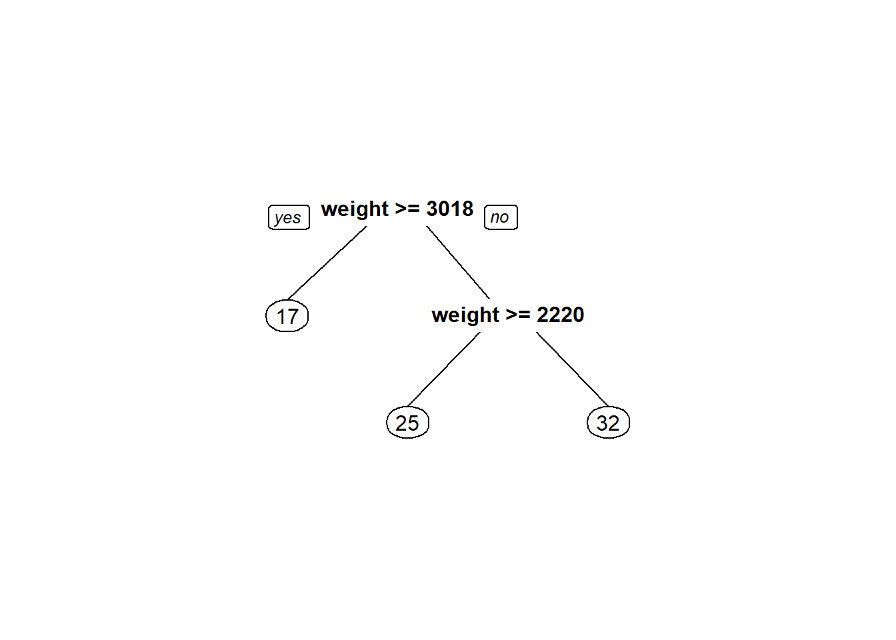
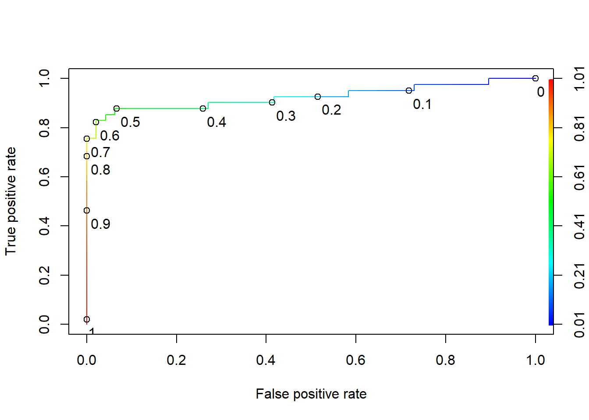
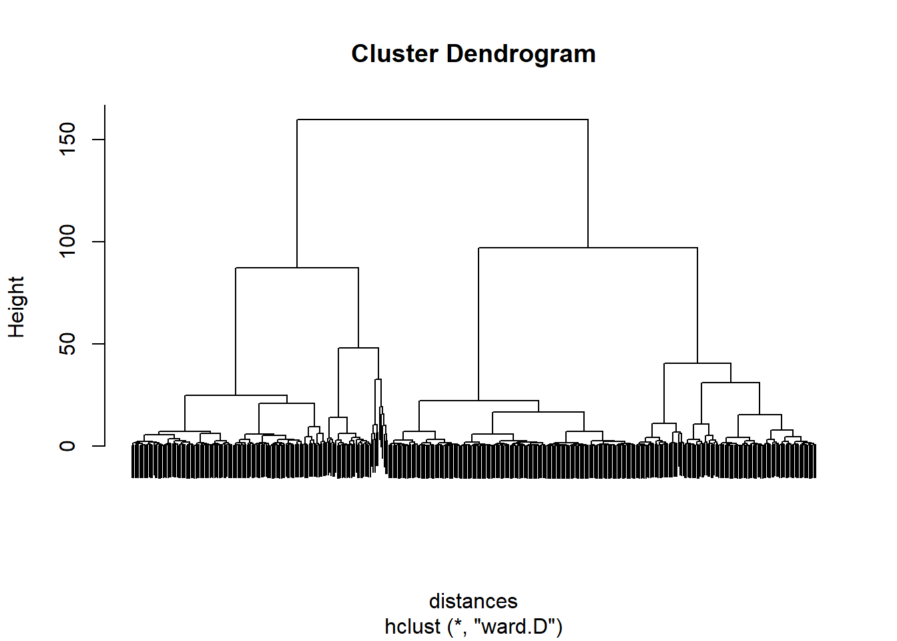

Unit 9 Final Exam
9.1 Part 1 - Estimating Miles Per Gallon
9.1.1 Problem 1 - Exploratory Data Analysis
## [1] 298## mpg cylinders displacement horsepower weight
## Min. : 9.00 Min. :3.000 Min. : 70.0 Min. : 46.0 Min. :1649
## 1st Qu.:17.60 1st Qu.:4.000 1st Qu.:105.5 1st Qu.: 78.0 1st Qu.:2264
## Median :23.00 Median :4.000 Median :146.0 Median : 94.0 Median :2795
## Mean :23.40 Mean :5.389 Mean :190.4 Mean :103.9 Mean :2954
## 3rd Qu.:28.07 3rd Qu.:6.000 3rd Qu.:256.0 3rd Qu.:116.0 3rd Qu.:3464
## Max. :46.60 Max. :8.000 Max. :455.0 Max. :230.0 Max. :5140
## NA's :5
## acceleration model_year car_name
## Min. : 8.00 Min. :70.00 ford pinto : 5
...##
## 70 71 72 73 74 75 76 77 78 79 80 81 82
## 22 20 22 34 21 23 26 18 25 21 23 21 22## [1] 70## mpg cylinders displacement horsepower weight acceleration model_year
## 38 19.0 3 70 97 2330 13.5 72
## 134 23.7 3 70 100 2420 12.5 80
## 276 18.0 3 70 90 2124 13.5 73
## car_name
## 38 mazda rx2 coupe
## 134 mazda rx-7 gs
## 276 maxda rx3##
## 3 4 5 6 8
## 3 155 3 67 709.1.2 Problem 2 - Simple Linear Regression
## mpg cylinders displacement horsepower weight
## Min. : 9.00 Min. :3.000 Min. : 70.0 Min. : 46.0 Min. :1649
## 1st Qu.:17.50 1st Qu.:4.000 1st Qu.:107.0 1st Qu.: 78.0 1st Qu.:2264
## Median :23.00 Median :4.000 Median :146.0 Median : 94.0 Median :2790
## Mean :23.32 Mean :5.406 Mean :191.3 Mean :103.9 Mean :2961
## 3rd Qu.:28.00 3rd Qu.:6.000 3rd Qu.:258.0 3rd Qu.:116.0 3rd Qu.:3520
## Max. :46.60 Max. :8.000 Max. :455.0 Max. :230.0 Max. :5140
##
## acceleration model_year car_name
## Min. : 8.00 Min. :70.00 ford pinto : 5
...## [1] -0.8025754##
## Call:
## lm(formula = mpg ~ weight, data = train)
##
## Residuals:
## Min 1Q Median 3Q Max
## -11.546 -2.735 -0.465 2.315 16.950
##
## Coefficients:
## Estimate Std. Error t value Pr(>|t|)
...test <- read.csv("final/mpg_test.csv")
test <- test[rowSums(is.na(test)) == 0, ]
pred <- predict(carMod, newdata = test)
#R-squared
SSE = sum((test$mpg - pred)^2)
SST = sum((test$mpg - mean(test$mpg))^2)
1- SSE/SST #R-squared## [1] 0.81000569.1.3 Problem 3 - Adding More Variables
## mpg cylinders displacement horsepower weight
## mpg 1.0000000 -0.7479941 -0.7769034 -0.7542429 -0.8025754
## cylinders -0.7479941 1.0000000 0.9469783 0.8266263 0.8915051
## displacement -0.7769034 0.9469783 1.0000000 0.8793060 0.9274907
## horsepower -0.7542429 0.8266263 0.8793060 1.0000000 0.8520960
## weight -0.8025754 0.8915051 0.9274907 0.8520960 1.0000000
## acceleration 0.3915798 -0.4661569 -0.5041429 -0.6718056 -0.3766874
## model_year 0.5718941 -0.3008985 -0.3261212 -0.3942260 -0.2772049
## acceleration model_year
## mpg 0.3915798 0.5718941
...##
## Call:
## lm(formula = mpg ~ weight + acceleration + model_year, data = train)
##
## Residuals:
## Min 1Q Median 3Q Max
## -8.1940 -2.4146 -0.1621 1.9670 14.4195
##
## Coefficients:
## Estimate Std. Error t value Pr(>|t|)
...pred <- predict(carMod, newdata = test)
#R-squared
SSE = sum((test$mpg - pred)^2)
SST = sum((test$mpg - mean(test$mpg))^2)
1- SSE/SST## [1] 0.88404289.1.4 Problem 4 - CART and Randomforest
library(rpart)
library(rpart.plot)
regTree <- rpart(mpg ~ weight, data = train, cp=0.05)
prp(regTree)
pred <- predict(regTree, newdata = test)
#R-squared
SSE = sum((test$mpg - pred)^2)
SST = sum((test$mpg - mean(test$mpg))^2)
1- SSE/SST## [1] 0.8000141## Warning in RNGkind("Mersenne-Twister", "Inversion", "Rounding"): non-uniform
## 'Rounding' sampler usedset.seed(10)
library(caret)
library(e1071)
numFolds <- trainControl(method="cv", number=10) # cv = croos validation; numer = number of folds(buckets)
cpGrid <- expand.grid(.cp=seq(0.001,0.1,0.01))#cp paramaeters to teast as numbers from 0.01 to 0.5, in increments of 0.01.
train(mpg ~ weight, data = train, method="rpart", trControl=numFolds, tuneGrid = cpGrid)## CART
##
## 293 samples
## 1 predictor
##
## No pre-processing
## Resampling: Cross-Validated (10 fold)
## Summary of sample sizes: 264, 264, 263, 264, 264, 264, ...
## Resampling results across tuning parameters:
##
...#RandomForest
library(randomForest)
carsRF <- randomForest(mpg ~ weight, data=train, nodesize=75, ntree=15)
predRF <- predict(carsRF, newdata=test)
SSE = sum((test$mpg - predRF)^2)
SST = sum((test$mpg - mean(test$mpg))^2)
1- SSE/SST## [1] 0.83033059.2 Part 2 - Predicting Heart Disease
9.2.1 Problem 1&2 - Exploratory Data Analysis and Logistic Regression
##
## 0 1 2 3
## 174 65 38 20## 0 1
## 243.4938 251.8540## Warning in RNGkind("Mersenne-Twister", "Inversion", "Rounding"): non-uniform
## 'Rounding' sampler usedset.seed(100)
spl <- sample.split(data$HD, 0.7)
train <- subset(data, spl == TRUE)
test <- subset(data, spl == FALSE)
#2.2 - Train a logistic regression model using Thalach as the independent variable
logModel <- glm(HD ~ Thalach, data = train, family = "binomial")
summary(logModel)##
## Call:
## glm(formula = HD ~ Thalach, family = "binomial", data = train)
##
## Deviance Residuals:
## Min 1Q Median 3Q Max
## -2.0901 -0.9601 -0.6145 1.0788 2.0442
##
## Coefficients:
## Estimate Std. Error z value Pr(>|z|)
...## Min. 1st Qu. Median Mean 3rd Qu. Max.
## 0.1809 0.3323 0.4476 0.4924 0.6462 0.9161##
## FALSE TRUE
## 0 37 11
## 1 13 28## [1] 0.7303371##
## 0 1
## 48 41## [1] 0.53932589.2.2 Problem 3 - Adding More Variables
##
## Call:
## glm(formula = HD ~ ., family = "binomial", data = train)
##
## Deviance Residuals:
## Min 1Q Median 3Q Max
## -2.4678 -0.6836 -0.2625 0.6075 2.3939
##
## Coefficients:
## Estimate Std. Error z value Pr(>|z|)
...## Min. 1st Qu. Median Mean 3rd Qu. Max.
## 0.008669 0.169935 0.425795 0.487866 0.878065 0.998005##
## FALSE TRUE
## 0 45 3
## 1 5 36## [1] 0.9101124#ROC Curve
library(ROCR)
ROCRpred <- prediction(pred, test$HD)
ROCRperf <- performance(ROCRpred, "tpr","fpr")
plot(ROCRperf, colorize=T, print.cutoffs.at=seq(0,1,0.1), text.adj=c(-0.2,1.7))
## [1] 0.92530499.2.3 Problem 4 - CART
## Warning in RNGkind("Mersenne-Twister", "Inversion", "Rounding"): non-uniform
## 'Rounding' sampler usedset.seed(100)
numFolds <- trainControl(method="cv", number=10) # cv = croos validation; numer = number of folds(buckets)
cpGrid <- expand.grid(.cp=seq(0.01,0.05,0.001))#cp paramaeters to teast as numbers from 0.01 to 0.5, in increments of 0.01.
train$HD <- as.factor(train$HD)
train(HD~ ., data = train, method="rpart", trControl=numFolds, tuneGrid = cpGrid)## CART
##
## 208 samples
## 9 predictor
## 2 classes: '0', '1'
##
## No pre-processing
## Resampling: Cross-Validated (10 fold)
## Summary of sample sizes: 188, 187, 187, 187, 187, 187, ...
## Resampling results across tuning parameters:
...9.3 Part 3 - Understanding User’s Spending
9.3.1 Problem 1 and 2
## Fresh Milk Grocery Frozen
## Min. : 3 Min. : 55 Min. : 3 Min. : 25.0
## 1st Qu.: 3128 1st Qu.: 1533 1st Qu.: 2153 1st Qu.: 742.2
## Median : 8504 Median : 3627 Median : 4756 Median : 1526.0
## Mean : 12000 Mean : 5796 Mean : 7951 Mean : 3071.9
## 3rd Qu.: 16934 3rd Qu.: 7190 3rd Qu.:10656 3rd Qu.: 3554.2
## Max. :112151 Max. :73498 Max. :92780 Max. :60869.0
## Detergents_Paper Delicatessen userid
## Min. : 3.0 Min. : 3.0 Min. : 1.0
## 1st Qu.: 256.8 1st Qu.: 408.2 1st Qu.:110.8
...spending <- data
spending$userid <- NULL
preproc <- preProcess(spending)
spendingnorm <- predict(preproc, spending)
summary(spendingnorm)## Fresh Milk Grocery Frozen
## Min. :-0.9486 Min. :-0.7779 Min. :-0.8364 Min. :-0.62763
## 1st Qu.:-0.7015 1st Qu.:-0.5776 1st Qu.:-0.6101 1st Qu.:-0.47988
## Median :-0.2764 Median :-0.2939 Median :-0.3363 Median :-0.31844
## Mean : 0.0000 Mean : 0.0000 Mean : 0.0000 Mean : 0.00000
## 3rd Qu.: 0.3901 3rd Qu.: 0.1889 3rd Qu.: 0.2846 3rd Qu.: 0.09935
## Max. : 7.9187 Max. : 9.1732 Max. : 8.9264 Max. :11.90545
## Detergents_Paper Delicatessen
## Min. :-0.6037 Min. :-0.5396
## 1st Qu.:-0.5505 1st Qu.:-0.3960
...9.3.2 Problem 3 - Clustering
distances <- dist(spendingnorm, method = "euclidean")
dend <- hclust(distances, method = "ward.D")
plot(dend, labels = FALSE)
## Warning in RNGkind("Mersenne-Twister", "Inversion", "Rounding"): non-uniform
## 'Rounding' sampler used## List of 9
## $ cluster : int [1:440] 2 1 1 2 3 2 2 2 2 1 ...
## $ centers : num [1:4, 1:6] -0.513 -0.228 1.657 0.52 0.645 ...
## ..- attr(*, "dimnames")=List of 2
## .. ..$ : chr [1:4] "1" "2" "3" "4"
## .. ..$ : chr [1:6] "Fresh" "Milk" "Grocery" "Frozen" ...
## $ totss : num 2634
## $ withinss : num [1:4] 188 235 440 491
## $ tot.withinss: num 1354
## $ betweenss : num 1280
...##
## 1 2 3 4
## 96 269 63 12## 1 2 3 4
## 25 47 287 36## 1 2 3 4
## 5509.25 9115.32 32957.98 18572.42## 1 2 3 4
## 42821.14 20087.20 55680.51 133111.75